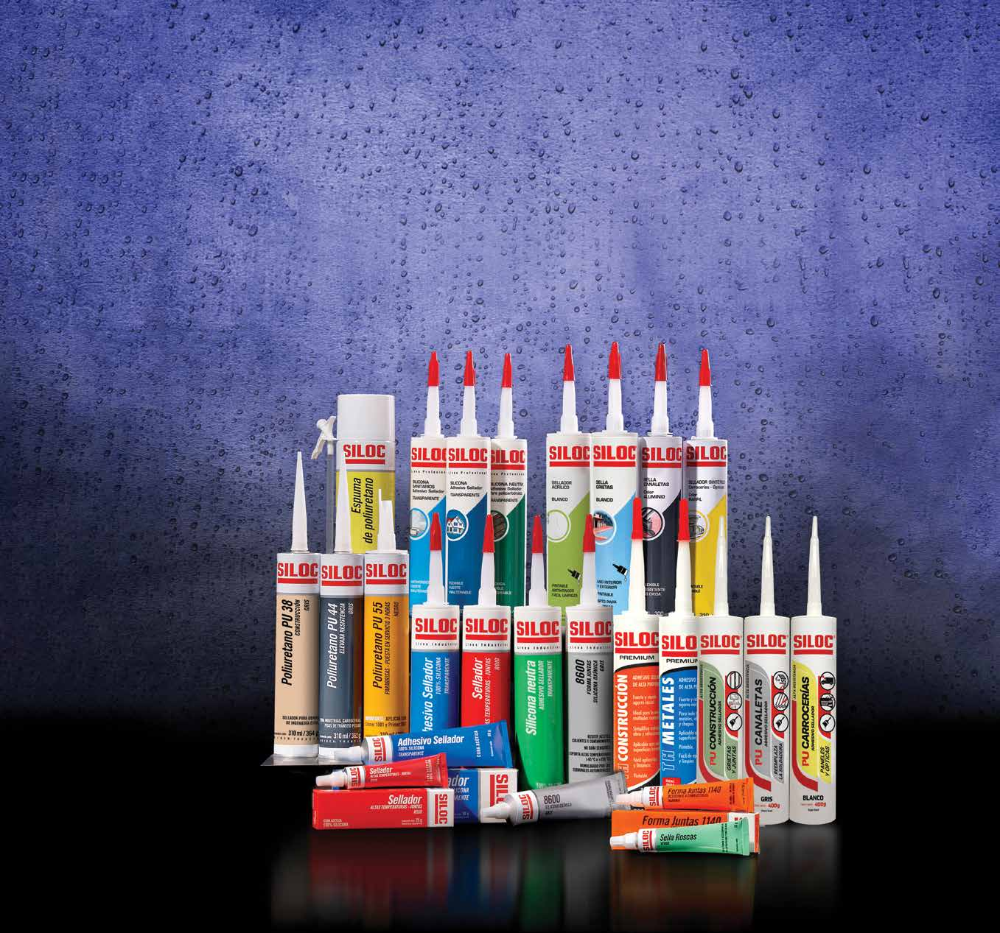
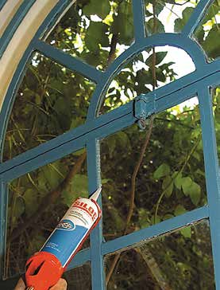
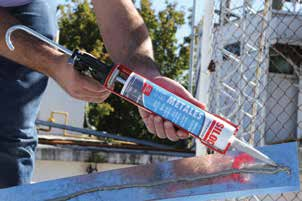
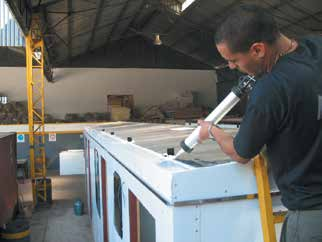

Siliconas
Híbridos
Poliuretanos



Selladores y Adhesivos SILOC
SILOC es la marca de selladores y adhesivos distinguidos por ser garantía de calidad, variedad e innovación. Su amplia línea de productos cubre los requerimientos de diversas industrias y mercados.
Siliconas Acéticas
Uso universal. Fuerte, flexible, inalterable. Resiste al agua, intemperie y UV. Aislante eléctrico (20 kV/mm).
| Producto | Presentación | Temperatura | Aplicación |
|---|---|---|---|
| Adhesivo Sellador Transparente | 25/100/280g 400033/037/569 | -40 a +180°C | Uso universal. Vidrio, superficies vitrificadas, esmaltadas. |
| Adhesivo Sellador Blanco | 25/100/280g 400034/038/568 | -40 a +180°C | Baños, cocinas, cerramientos. Anti hongos. |
| Adhesivo Sellador Negro | 25/100/280g 400035/039/571 | -40 a +180°C | Alta resistencia. Para automotriz. |
| 100% Silicona Industrial | 280g 400528/527/526 | -40 a +180°C | Línea industrial. Mayor rendimiento y calidad constante. |
Siliconas Neutras
Para construcción, policarbonato, aberturas plásticas y espejos. No ataca láminas reflectantes.
| Producto | Presentación | Temperatura | Aplicación |
|---|---|---|---|
| Silicona Neutra Transparente | 100/280g 400041/572 | -40 a +180°C | Hormigón, mampostería, cerámicos, vidrio. |
| 100% Sil. Neutra Industrial | 280g 400522/521/520 | -40 a +180°C | Policarbonato, aberturas plásticas, espejos. |
Siliconas Oxímicas / Altas Temperaturas
| Producto | Presentación | Temperatura | Aplicación |
|---|---|---|---|
| Silicona Altas Temp. Rojo | 25/100/280g 400036/040/570 | -60 a +260°C | Formajuntas. Cajas de engranajes, diferenciales, motores. MIL, NSF, USDA. |
| 8500 Formajuntas Gris | 70/85g 100283/285 | -62 a +260°C | RTV 100% silicona. Sustituye juntas papel, corcho y fibra. |
| 8600 Formajuntas Negro | 70/85g 100295/297 | -62 a +260°C | Carter y tapas embrague. Excelente resistencia a aceites. |
Adhesivos Selladores Híbridos
| Producto | Presentación | Temperatura | Aplicación |
|---|---|---|---|
| TH Construcción Blanco | 450g - 400626 | -40 a +90°C | Cemento, mármol, cerámicos, madera, vidrio, espejos. No oxida. Pintable. |
| TH Metales Gris | 450g - 400640 | -40 a +90°C | Chapas galvanizadas, aluminio, canaletas, zinguería. No causa oxidación. |
Selladores de Poliuretano
| Producto | Presentación | Temperatura | Aplicación |
|---|---|---|---|
| PU 38 Gris/Blanco | 300/600ml 400054/56/67/69 | -40 a +80°C | Juntas dilatación, grietas, techos, fachadas. Máxima elasticidad. |
| PU 44 Gris/Negro | 300/400/600ml 400059-64 | -40 a +90°C | Uso general industrial. Alta adherencia. Resiste químicos. |
| PU 52 | 310ml - 100352 | -40 a +90°C | Pegado de parabrisas. Adhesivo estructural. |
Espuma de Poliuretano
| Producto | Presentación | Aplicación |
|---|---|---|
| Espuma PU | 300/500/750ml 400073/74/76 | Espuma expandible. Rellena huecos, aísla térmicamente. Pintable, lijable. |
| Sellador Acrílico | 280g 400080/82/83/84/85 | Grietas, fisuras, juntas en paredes. Pintable. Interior/exterior. |